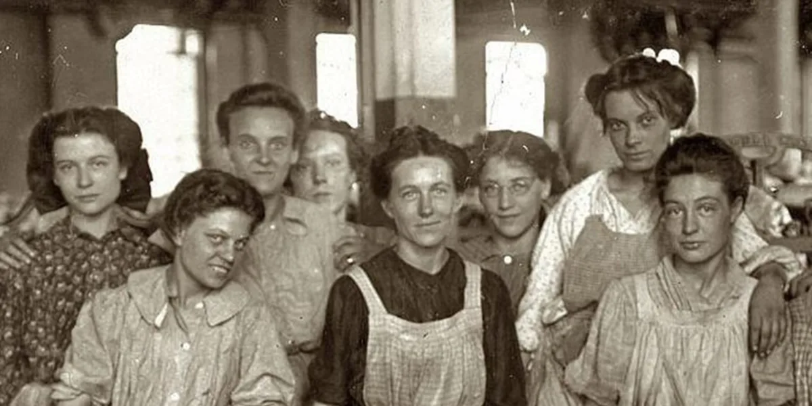
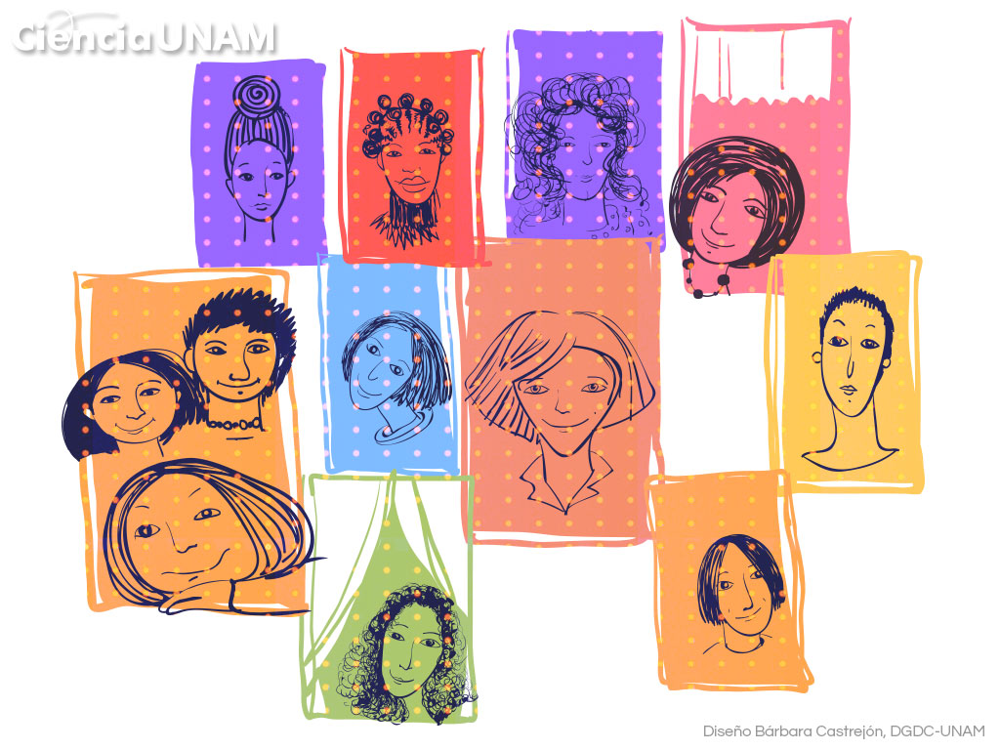
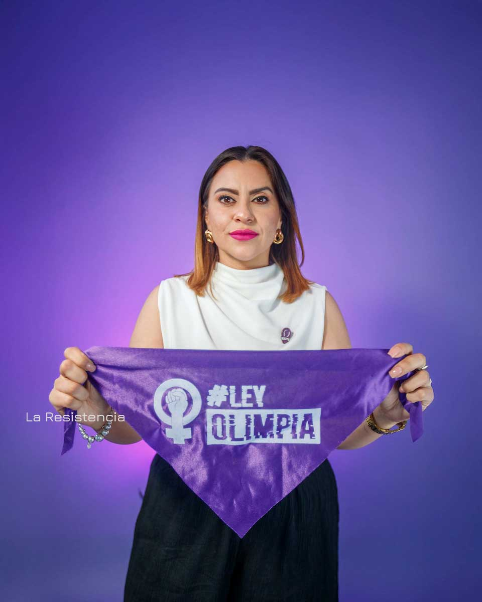
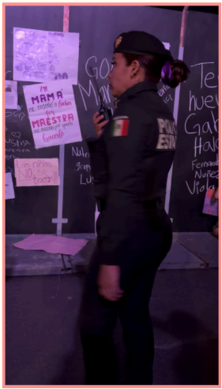
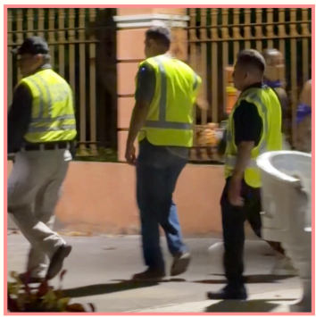
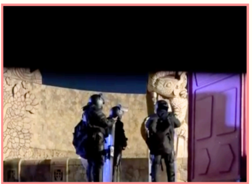
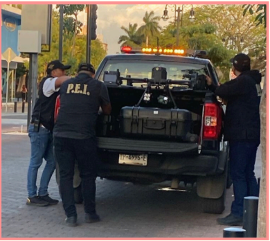
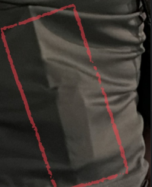
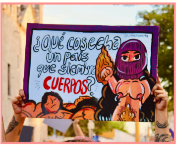

¿Por qué el 8M es un día de conmemoración y no de celebración? Aquí te contamos más de esta lucha.
Esta conmemoración tiene como origen Nueva York, donde las trabajadoras de una fábrica textil protestaban por condiciones laborales dignas. En un intento por reprimir la protesta, los dueños cerraron las salidas del edificio, dejando a las empleadas atrapadas. Esta irresponsable acción termino en un devastador incendio, donde más de 120 mujeres perdieron la vida. Este suceso marco un parteaguas en la lucha por los derechos laborales y la seguridad industrial en el mundo.

Aunque el 8 de marzo ya se conmemoraba en diversos países desde principios del siglo XX, no fue hasta 1975 cuando la ONU lo institucionalizó oficialmente. Posteriormente, en 1977, la Asamblea General invitó a todos los Estados a proclamar una jornada al año como el Día de las Naciones Unidas para los Derechos de la Mujer.
Ley General de Acceso de las Mujeres a una Vida Libre de Violencia, se proclama como el marco legal principal en México que define los tipos de violencia (psicológica, física, patrimonial, económica y sexual) y establece mecanismos de protección.


La Ley Olimpia: Un avance reciente y crucial que sanciona la violencia digital. Surgió de la lucha de Olimpia Coral Melo y hoy es un referente internacional de justicia para las mujeres.
Se registró presencia de: 1) Policía preventiva y antimotines de la SSP; 2) Policía Estatal de Investigación (PEI) de la SSP; y 3) Policía Municipal del Ayuntamiento de Mérida.
En términos generales, la presencia policial directa en el trayecto de la movilización fue reducida. En el punto final del recorrido se registró la presencia de elementos de la PEI, tanto en los alrededores del monumento como entre las personas manifestantes. En la zona también se identificó la presencia de policías estatales ubicados a cierta distancia del contingente, todos haciendo uso de radios.


Se notó la presencia de personas con características similares a los policias (hombres con
cabello rapado a los costados y corto en la parte superior; usualmente vestidos con
playera simple, pantalón de mezclilla azul y gorra) que acudieron a la protesta como
"civiles".
Es decir, no acuidieron con uniformes oficiales, logotipos, sin armas visibles, pero que igualmente merodeaban la zona de la protesta del 8M. Su operatividad igualmente se confirma puesto que se observó que cerca de la conclusión de la marcha, se agruparon y se colocaron chalecos reflejantes color amarillo, similares a los de los polícas preventivos o de tránsito.
Entre la noche del 7 de marzo y la madrugada del día 8 de marzo de 2026, se registró que elementos de la Secretaría de Seguridad Pública, acompañados de personal técnico del Gobierno del Estado de Yucatán, se encontraban instalando "vallas" alrededor de Monumentos y edificios públicos en la ciudad de Mérida.


Se observó la presencia de al menos 5 drones, dos de ellos
pertenecientes al cuerpo policial, situados especificamente sobre
el Monumento a la Patria.
Un dron de gran tamaño, perteneciente a la PEI, se mantuvo fijo sobre la zona del monumento, realizando únicamente pequeños desplazamientos sobre el mismo perímetro. El segundo dron, de menor tamaño, permaneció sobre el mismo momunmento captando tomas más cercanas, pero enfocándose en las manifestantes realizando actos de iconoclasia.
Se observó la presencia de los "orejas" en la marcha del 8M.
Son personas que acuden a diversos espacios de protesta vestidos
de "civiles" que cuentan con equipo de radiocomunicación que suele
merodear en las marchas para dar aviso sobre cualquier suceso.
igualmente suelen tomar audio, video y fotografías para documentar
lo sucedido con diversos fines, incluídos la criminalización.
En particular, en la marcha del 8M se detectaron a 3 perosnas con estas características.


La Comisión llegó a la conclusión que existió de manera
previa a la manifestación y durante esta, diversos actos de
autoridad que constituyen una vulneación al derecho a la
protesta y liberta de expresión de las mujeres (cis y trans)
asistentes a la marcha por el 8M, tales como:
1. Censura previa: La colocación de vallas de
forma previa a que una protesta se efectúe, es una forma de Censura
previa, toda vez que la iconoclasia es una forma de protesta que está
protegida, lo que implica que su restricción nunca debe ser previa.
2. Criminalización: El uso de drones y orehas como
mecanismos que no constituyenun cuidado de la seguridad pública durante
la manifestación, sino actos intimidatorios que pueden conducir a procesos
penales futuros.
3. Seguridad en la protesta: Frente al amedrentamiento
de algunos hombres durante la protesta, manifestantes requirieron a agentes
de la policía su intervención para garantizar la seguridad de las mujeres,
sin que los elementos policiacos atendieran a dichas peticiones.